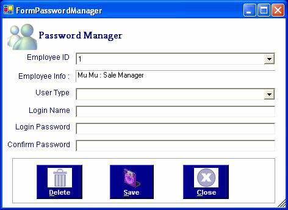

How to create new user account and process password managing
After you have successfully logged in to the system, click Password Manager form from File Menu to create a new role for accessing the system. This Password Manager form will be appeared.

To create a new login, choose employee ID first, then enter the required data and more that 5 characters password.
Then Click "Save" button or Alt+S. This message will be appeared.
To restrict the user access, click "Delete" or Alt+D. The access of users will be locked.
To close the form, click "Close" or Alt+C.